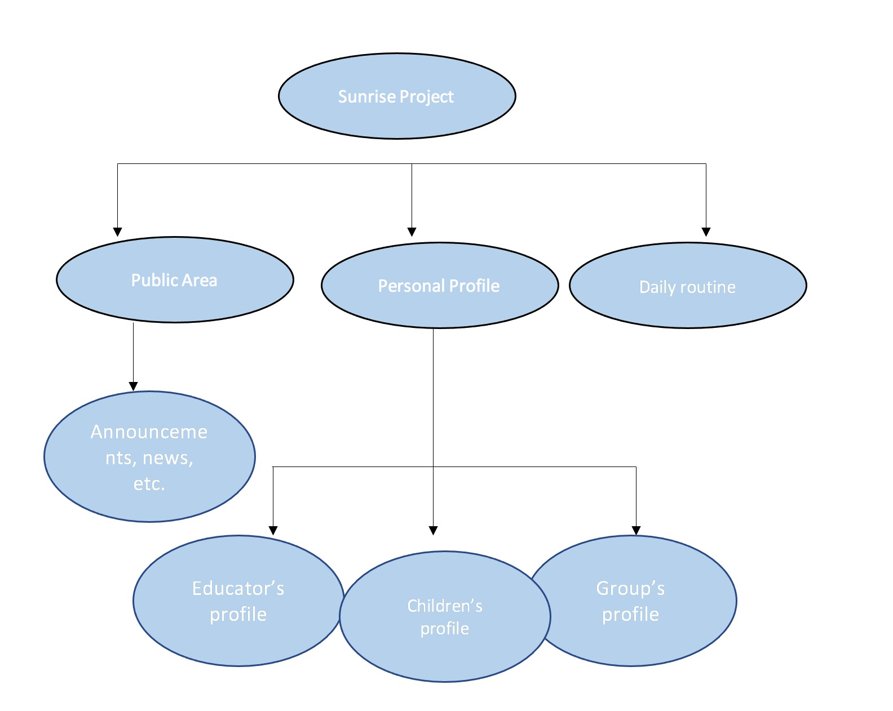

Early Childhood is becoming better investment than the others, “with many benefits that other investment opportunities lack” (Childcare4sale, 2021). In 2023, “free three and four-year-old kinder will be available across Victoria at both long day care and sessional services. For three-year-olds, this means from 5 and up to 15 hours per week of a kindergarten program; for four-year-olds, this means 15 hours per week(600 hours a year)” (Victoria goverment, 2022).
This project is developing a smartphone app for Early Childhood settings , using Python or by using tools, such as MIT App Inventor. A smart app that can help childcare managers, educators, parents to receive the news from centre, get records of child and track children’s learning journey. This app cross different platform such as iPad, apple watch, phone, computer, etc.
The popular apps we use in childcare settings, such as Story park, Playground, they have some shortness like not very friendly to people who lack technology skills or doesn’t support speech-to-text which is useful in childcare settings.
This app will be allowed educator to record children’s daily routine (such as eating, toileting, sleeping, sickness, incident.). Use speaking as input to record their ideas and store under their personal file instead take a note by using pen. Educator can use that voice recording to write their observations later or transfer the voice to text which will be extremely friendly for those people hard to learn complex technology skills.
This project will have three part.
Public area which educator can send announcements to the others and parents, set up who can read them as different groups. Also, it allows educator change different decorate to suit different festival by one click. In this area, it automatic link educator’s email, then educator don’t need to download two apps. Educator can set up the time to review the news or set up remainder on calendar (some popular apps which use in childcare has not this option).
In this part, has three sesstions. They are Educator's profile, Children's profile, Group's profile. Educator’s profile – store educator’s information, philosophy, introduction to let parents knows this person, help to build the good relationship with community. Educator can have his/her own space like cloud, it can store notes, recording to let educator create their own file to help them write reports, observations, etc.
Children’s profile—store children’s information, interests, family information that allow educator can check on the app to fast build up good relationship with children. Also, can help educator avoid checking information on the paper file which usually store on the office. Consider that educator should be always on the field with children, this app can provide more details instead search paper record.
Group’s profile—store information about this group especially when take excursion, educator only need to care a small iPad to check the basic information which avoid the paper file which is easy to lost and hard to search basic information when in a hurry.
Daily routine is very important in childcare settings. But most of childcare still use paper record which is easy to lost and hard to store. Use visual app to apply in daily record which is help educator fast to check the daily update and friendly to use. Also, store the date on the cloud can let the data hard to lost and reduce the waste.
To be develop this project, first you need a Macbook/Mac mini/iMac.
Secondly, you need Xcode to help you. What is Xcode? Xcode is a MacOS app made by Apple, it uses for Apple app development. “Xcod is an IDE – an integrated development environment – created by Apple for developing software for macOS, iOS, watchOS, and tvOS.” (Eddy) Think about that Xcode is like a pen and paper, you need them to write down your code.
Now, we have equipment - Macbook/Mac mini/iMac, you have "pen and paper", what's the language you need to use for the program? For mobile app development, you need to know the best language is Swift/Java/Dart. There are many options, but here, I just talk about Swift. “Swift is a powerful and intuitive programming language for iOS, iPadOS, macOS, tvOS, and watchOS.” (Developer)
The last thing is very import! You could not finish anything without it. That is a wonderful team!!
The skills are required for this project like below:
• Product management
• Design
• Skills on how to use programming language
• Business analysis
• Communication skills
• Problem solving skills
• Testing skills
Product management skill is a very important skill. Imagine that you have to use this skill to communicate with developer and client. Delivery their ideas between developer and client. “Design simply refers to the overall look and feel of the app.”(Angelo, 2020). Programming language is spirit of project, without a right language that would not turn idea to reality. As a developer, need to use communication skills to cooperation with team to write the code, to use coding skills to make the app running smoothly. In the end, developer must have good testing skill to run the test, find the problems and solve the problems.
The outcome I expected is to develop a friendly app that is easy to use under childcare settings. It will be cute, warm and friendly for all the user (at least 90% hopefully). It will be cheap that allow most of childcare centre to use them to reduce the budget. The most of popular apps is not very friendly in some of functions, for example, it doesn’t allow educator to create their own draft by recording speech, it does not use speech-text technology which is friendly for the user who is typing slowly. In the other hand, long screen time brings a lot of troubles for our life. Some educator spends large amount of time on computer that is not because they love it. In fact, they are struggling with learning how to use those technologies including finding the right page to store data, typing and reading. If the app has speech to text, text to voice functions which means they can speak out what they think and the app will transfer as text, or they can let app read aloud what’s the text, it will help them reduce the screen time.
• 7 reasons childcare centres are outperforming other investments, and smart buyers know it, Childcare4Sale, viewed 18 June 2021, https://www.childcare4sale.com.au/7-reasons-childcare-centres-are-outperforming-other-investments-and-smart-buyers-know-it
• Give your child the best start, Victoria Government, viewed 29 August 2022, https://www.zerotoappstore.com/what-is-xcode-and-why-do-i-need-it.html
• What is Xcode and why do I need it? Eddy Chung, Zero To App Store, https://www.zerotoappstore.com/what-is-xcode-and-why-do-i-need-it.html
• Swift the powerful programming language that is also easy to learn, Developer,https://developer.apple.com/swift/
• 14 Essential App Development Team Skills You Must Have, Ascendle, Angelo, F, viewed 17 June, 2020, https://ascendle.com/ideas/14-skills-your-app-development-team-must-have/